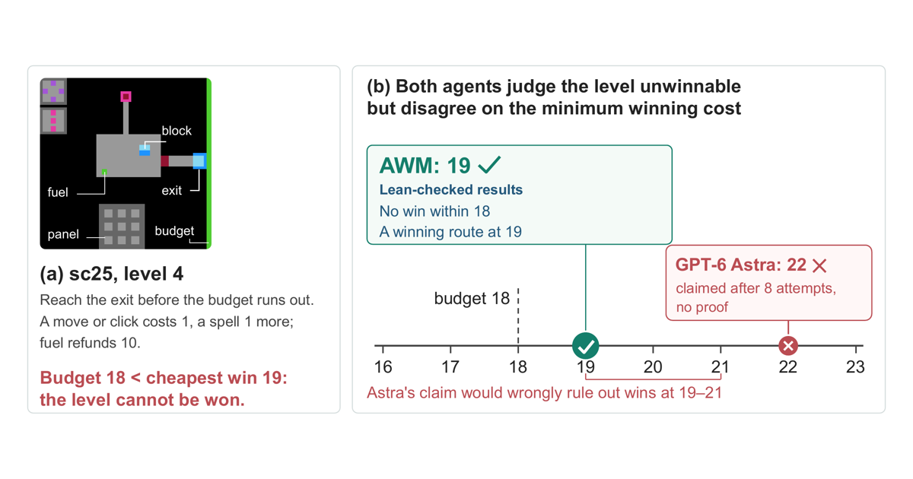
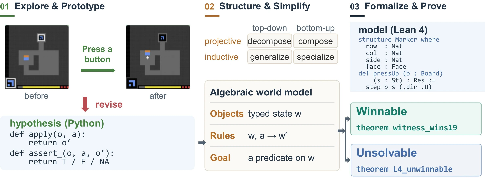
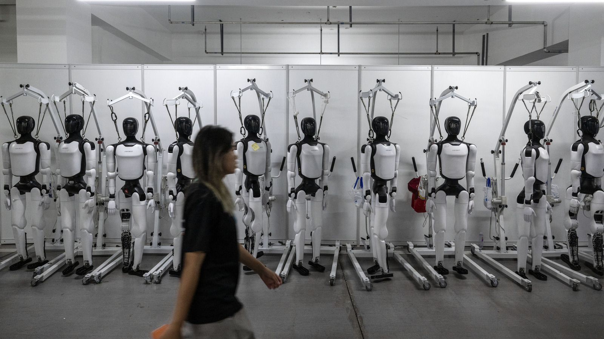
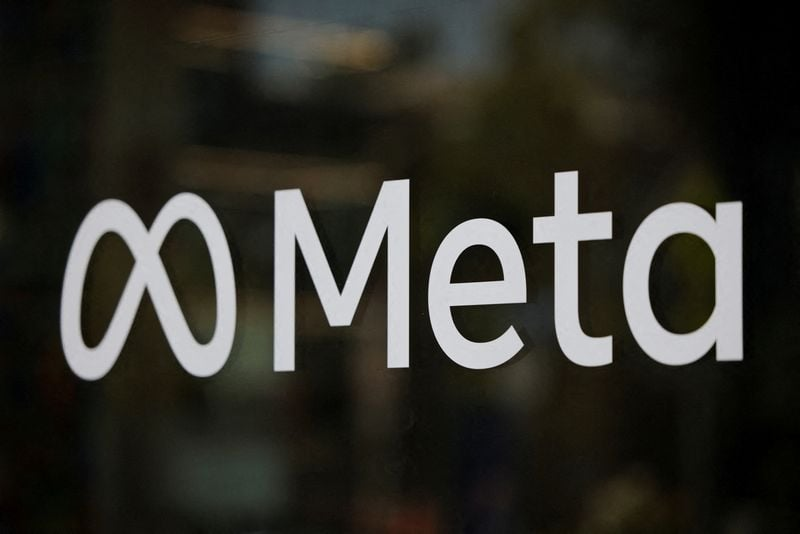
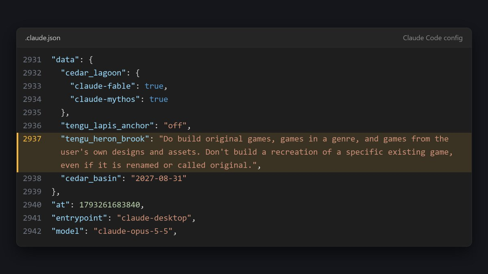
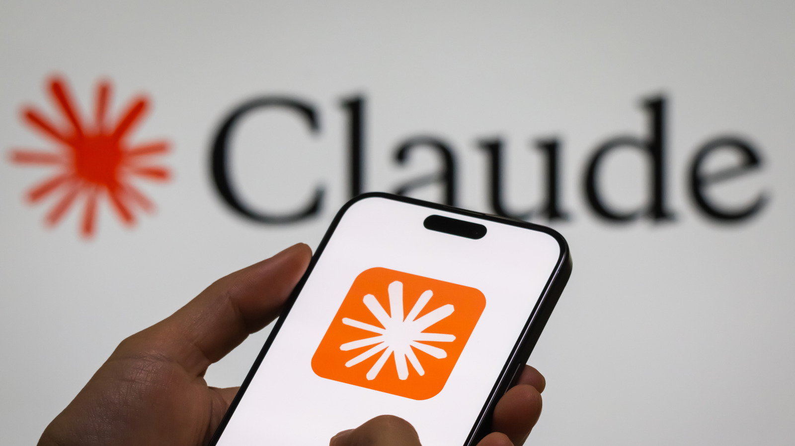
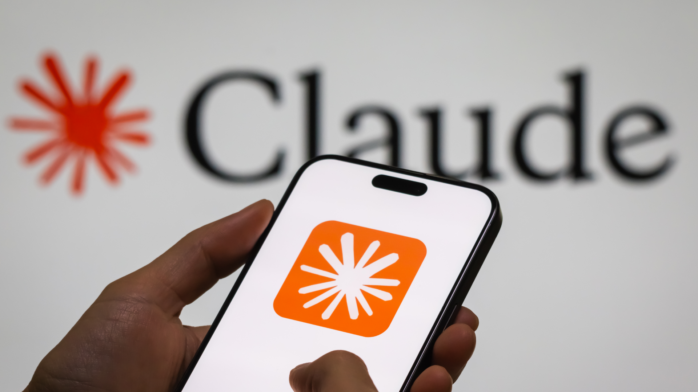

AI 产品情报 · 2026-11-02（周一）
本版覆盖媒体 / 一手源约 18 家（官方/一手 5 · 中文 7 · 外文 6） ：AWM 一手是项目页、arXiv 2610.40503、智源社区转载袁洋组稿；中文是量子位、智源社区；对照基线写进论文表。Meta Max 一手是 The Information 爆料链，外文 Engadget / Reuters·Investing / The Next Web，中文智东西、IT之家；虎嗅当日 AI 快讯对「联合中国初创」持谨慎未证实口径，已标注。Claude 禁克隆：一手是 X @chasmmmmmmmmmmm 截图 + Anthropic 技术员工 Addy Osmani 回复确认；外文 Engadget、PC Gamer、Tom's Hardware；中文量子位；日本电ファミニコゲーマー跟进。机器之心 / 新智元窗内未见 AWM 专稿，不编造。
今日要点（先看这三条）
清华姚期智团队发布 Algebraic World Model（AWM） ：探索→凝炼→Lean 4 证明；密封「少 1 步」关卡上 6/6 给出核验无解证明，Opus 5.5 / Astra 12 次全无；Opus 5 + AWM 在 ARC-AGI-3 公开 25 款游戏达 99.9%，认证通关动作约人类基线 43%。这是代数/符号世界模型 ，不是像素视频世界模型。Meta 与傅利叶合作做出人形原型 Max（爆料） ：约 3 个月、约 48kg / 1.5m、Jetson Thor；对内叙事是 Muse 的实体化；Max 2 已于 9 月开工。证据链是 The Information 知情人士——非官宣产品发布、无量产时间表 。Anthropic 给 Claude Code / Opus 5.5 加规则：禁止复刻「已存在的特定游戏」 ：约 10-27 服务端下发 tengu_heron_brook；Addy Osmani 确认两句提示词；原创/类型/自有素材仍允许。周末至 11-01 发酵——独立工作室怕 Demo 被克隆，社区吐槽误伤与可绕过。
世界模型 · 符号/形式化 清华姚期智团队发布 Algebraic World Model（AWM）：让 AI 从探索走向 Lean 证明结论： AWM 不是又一个「生成可漫游视频」的像素世界模型，而是把陌生交互环境学成可执行、可凝炼、可在 Lean 4 里核验 的代数模型。对产品与算法团队最有杀伤力的一点：它能在「预算少 1 步」的密封关卡上证明无解 ——同样装备 coding tools 的 Claude Opus 5.5 / GPT-6 Astra 在 12 次基线里一份正式证明都交不出 。通关分数可以打平，但「知道何时不可能」是另一条能力轴。
1. 发生了什么
清华大学交叉信息研究院姚期智、袁洋 团队公开论文与项目页 Algebraic World Model: From Exploration to Proofs （arXiv 2610.40503 ）。共同一作是浙大本科生潘冠成 与清华姚班本科生谭淇心 。北京时间 2026-11-01 前后中文热度抬升：智源社区 15:50 转载袁洋组稿，量子位 16:02 发解读。
官方一句话：AWM 把未知游戏/环境学成显式数学模型，并在 Lean 里证明「能赢」与「不能赢」。
一手：项目页 awm-site · arXiv 2610.40503 · 中文：智源社区（袁洋组供稿） · 量子位 11-01 16:02
2. 产品介绍
它想解决什么： Frontier agent 在 ARC-AGI-3 这类「不告诉你规则也不告诉你目标」的游戏里，已经能整理出密密麻麻的符号化规则（量子位比喻：像第谷的观测本）。但这些规则往往只记现象 ——一旦关卡被改成「少 1 步就不可能通关」，模型会幻觉出错误下界（例如 Astra 找到 22 步路线就以为最优，而真实最优是 19）。
三步流水线（官方）：
Explore & Prototype ：边玩边写可执行 Python 假设，用观察到的转移不断检验、修订。Structure & Simplify ：整理成类型化对象与共享规则；用范畴论启发的投射/归纳极限变换做简化（Lean 检查通用性质）。Formalize & Prove ：编成 Lean 4，核验可达性与不可能性（不含 sorry / native_decide 捷径）。

项目页 OG——看完应搞懂：标语是 From Exploration to Proofs，路线是代数世界模型，不是视频生成。

论文 Figure 1（项目页同图）——看完应搞懂：探索写 Python 假说 → 代数变换凝炼结构 → Lean 4 给出可达/不可达证明。
智源社区封面（袁洋组供稿转载）——看完应搞懂：中文传播主叙事是「像牛顿一样从现象提炼可检验理论」，不是又一篇榜单刷分通稿。
关键数字（论文/项目页自报，可复现声明在站上）
密封无解关： sc25 两关预算压到最优解少 1 步；AWM 6/6 跑出闭式、内核核验的 Lean 无解证明；Opus 5.5 + Astra 共 12 次基线 0 份同类证明。初始下界正确率 4/6→反馈后 6/6；基线侧多数未判定或下界错。公开 25 款 ARC-AGI-3： 183/183 关 Lean 回放认证通关轨迹；Opus 5 + AWM 官方分 99.9 （无 AWM 的 Opus 5 标准 harness 仅 40.7）；认证动作数 7,448 ≈ 人类基线 43%，论文表中在报该指标的系统里最少。泛化抽检： 冻结规则后，未见过布局上 4,160/4,160 转移预测对；机制改动后 4,031/4,031 拒绝。
证明成立的范围是「在学到的模型前提下」。作者明确写：屏幕→状态的解析在 Python、Lean 外；模型可能比真游戏更严。证据要靠交互检验与「充分覆盖」迁移条件，不是「Lean 过了=世界真理」。
怎么自己看（12 分钟）
打开
项目页 → 先看首页四条关键数字与「It knows when a task is impossible」演示（预算 18 vs 19）→ 再点进任一游戏页看 Lean 回放说明 → 需要细节读
arXiv 摘要 + §4 密封实验 。中文先读智源社区组稿（比量子位更贴近作者口径），量子位适合 3 分钟抓住「第谷 vs 开普勒」比喻。
视频： 官方站以内嵌 webp 动画展示各游戏认证轨迹，无单独 YouTube 片；本版以 Figure 1 + OG + 智源封面为准，不硬嵌无关口播。
3. 导致什么影响（含竞品）
vs 只记规则的 frontier agent（GPT-6 Astra + Provider Adapter、Claude Opus 5.5）： 通关分上 Astra adapter / Memento 3 也能冲到满分附近；差距在不可能任务 ——基线会幻觉步数、交不出核验证明。产品含义：Agent 说「做不到」时，你要的是证明还是感觉？vs Memento 3 / 可执行代码世界模型（WorldCoder、Twin 等）： 同属「交互里学规则再规划」家族；AWM 额外把规则压成代数结构并形式化证明 。论文相关工作也点名：代码世界模型 100% 过采样检验仍可能因漏关键规则而输。vs 公司常见像素/视频世界模型（Genie、Hy-Nomas、EdenLive 等）： 那些优化的是画面一致性与可控生成；AWM 优化的是可检验的世界定律 。两条路线互补，不要拿视频观感去打 AWM 的分。
对我们（世界模型公司）
若产品控制是 WASD+IJKL+文字，AWM 不能直接当渲染器；可借鉴的是「探索留下可执行结构 → 结构能证明」 的评测叙事：除了通关率，增加「密封无解 / 下界是否紧」类题目，逼模型少幻觉。对标 Memento 3 时，别只比动作数，要比证明交付物。
4. 用户如何评价
量子位 11-01 16:02 中文主传播
智源社区转载作者组稿
机器之心/新智元窗内未见专稿
学术向：项目页可下载各游戏 Lean 包自检
正面： 「像牛顿一样思考」叙事清晰；本科生共一 + 姚期智挂名抬热度；可复现声明（1–10 分钟、约 12GB 内存跑 Lean）降低「只发 PPT」怀疑。谨慎： 主战场仍是 ARC 类离散、即时反馈环境；随机/延迟/富隐状态未测。媒体侧量子位标题偏煽，事实以论文表为准。可信度： 智源稿=组内供稿（近一手）；量子位=解读转述；外文科技媒体尚未形成同级跟进潮。
具身 · 爆料 Meta 与傅利叶合作做出人形原型「Max」：对内视为 Muse 的实体化结论： 这是 The Information 知情人士爆料 ，不是 Meta/傅利叶联合产品发布会。故事线很清楚：约 3 个月做出约 48kg、1.5m 的家庭向人形原型 Max，Jetson Thor + 表情屏 + 扬声器 + 五指手；CTO Bosworth 对内把人形说成 Muse Agent 的身体 ；Max 2 已于 9 月开工。对行业的意义是「大厂 Agent × 中国本体厂」的组合拳被坐实到原型机——但无量产时间表、未官方确认全部细节 ，写作时必须把「报道」和「开卖」分开。
1. 发生了什么
据 The Information（周末刊出），Meta 与上海傅利叶合作打造内部代号 Max 的人形原型；Reuters 经 Investing.com 转发时写明「未能立即核实」。外媒 Engadget、The Next Web 与中文智东西、IT之家在 10-31 夜至 11-01 跟进。智东西称 Meta 机器人产品副总裁 Li-Chen Miller 曾在傅利叶上海工厂驻场近两个月；8 月底内部机器人峰会已向部分员工展示。
外文：Engadget 11-01 · Reuters via Investing 10-31 · TNW · 中文：智东西 · IT之家 11-01 07:12 · 谨慎：虎嗅 AI 快讯 （对「联合中国初创」口径更留余地）
全文事实来自二手转述 The Information，本机无法打开 TI 付费原文。虎嗅同日条目强调收购 Assured Robot Intelligence 更硬、联合造机「尚未获证实」——与智东西/IT之家「据 TI 报道」写法并存，阅读时保留不确定性。
2. 产品介绍（报道口径）
规格： 约 1.5m、约 106 lb（≈48kg）；NVIDIA Jetson Thor ；面部表情显示屏；胸部扬声器；五指手可抓小瓶/玩具。交互指标（智东西转述 Meta 要求）： 5m 外识声、3m 外懂挥手/手势、保持眼神交流，并用信号表达倾听/思考/说话/不确定。Max 2（9 月开工）： 重设计躯干与手；加投影仪；加楼梯相关传感器。组织信号： 上海招供应商开发、深圳招产品设计/TPM，文案指向「从原型走向大规模生产」；同时 Ning Li 任 Robotics Studio 临时负责人，Bosworth 更深介入。

Engadget 配图——看完应搞懂：标题带 reportedly；正文确认 Max 2 已开做，无量产日。

Reuters/Investing 转述配图——看完应搞懂：通讯社口径是「TI 称 / Reuters 未能核实」，不是官方新闻稿。
怎么自己看（8 分钟）
先读
智东西长文 （细节最全：驻厂、交互指标、Max 2、招聘）→ 再用
Engadget 核对英文要点 → 看
Reuters 短讯 里的「could not verify」。不要把招聘 JD 当成量产承诺。
视频： 窗内无官方 Max 演示片（未官宣）；不嵌第三方脑补 CGI。
3. 导致什么影响（含竞品）
vs Figure / 1X NEO / Tesla Optimus： Figure 已在家庭场景测试，1X 接受预订，Optimus 走车厂产能叙事。Max 仍是内部原型 ，但差异化故事是「先有消费级 Agent Muse，再长身体」。vs 傅利叶自有 GR-1/2/3： 报道称基于傅利叶多代硬件经验定制身高/头显/手/鞋；这是代工+共创 ，不是 Meta 从零铸本体，也不是傅利叶自有消费品牌换皮官宣。vs 智元等国内消费/商用人形叙事（10-31 已报创新日）： 智元走榜单+OS+工时单位；Meta 走「社交/家用 Agent 具身化」。短线都在抢「家里能用」的心智，长线拼的是数据闭环与成本。
对我们
关注点不是跟风做人形外壳，而是：大厂把 Agent 产品（Muse）与本体供应链（傅利叶） 绑在同一路线图时，世界模型/操作数据会往哪边沉。若对方要「5m 识声、3m 懂势」，仿真与实机数据采集标准会变。
4. 用户如何评价
X 财经帖 faststocknewss ≈ 1.2 万曝光
中文科技媒体 11-01 早间跟进
未上市 · 未官方细节确认
行业读法： 「Muse 要身体了」是最容易传播的一句；招聘与 Max 2 被当作认真度信号。质疑： 中美机器人供应链敏感、TI 单源、无公开视频；虎嗅式「收购大脑更实、造机未证实」值得并列呈现。媒体可信度： 智东西/IT之家=TI 转述；Engadget=消费科技二传；Reuters=有核实免责声明；虎嗅=审慎摘要（非软广）。
安全/产品策略 Anthropic 给 Claude Code / Opus 5.5 加规则：禁止复刻「已存在的特定游戏」结论： 这不是新模型发布，而是一次系统提示/服务端规则 变更。约 2026-10-27 起，Claude Code 在 Opus 5.5 上通过旗标 tengu_heron_brook 下发规则：可做原创、类型、用户自有素材；不可复刻某个已存在的特定游戏 （改名也不行）。Anthropic 技术员工 Addy Osmani 在 X 确认动机是防 IP 侵权。周末到 11-01 中文量子位跟进时，社区争论已从「该不该管」扩到「误伤原创 / 拆任务可绕过 / 独立工作室取消 Demo」。
1. 发生了什么
X 用户 @chasmmmmmmmmmmm 于美东 10-30 左右曝出规则全文截图（帖子成稿核验约 227 万曝光 / 8928 赞 ）。Addy Osmani 回复确认：「We added two sentences to Claude Code's prompt on Opus 5.5…」（约 15.5 万曝光 / 445 赞 ）。Engadget、PC Gamer、Tom's Hardware 在 10-31～11-01 报道；量子位北京时间 11-01 21:09 发中文长文。日本电ファミニコゲーマー等也跟进。
一手确认：Chasm 发现帖 · Addy Osmani 确认 · 外文：Engadget · PC Gamer 10-31 · Tom's Hardware · 中文：量子位 11-01 21:09
2. 产品介绍（策略长什么样）
规则大意（用户截图 / 媒体引述）： Do build original games, games in a genre, and games from the user's own designs and assets. Do not build a recreation of a specific existing game, even if it is renamed or called original.
官方定性（Addy）： 加两句提示词以「steer away」；因用 Claude 侵权违反 usage policy；原创/类型/自有设计应继续可用；会继续迭代平衡；若误伤「你自己的东西」可找他。
背景压力： Opus 5.5 后出现大量 AI 辅助反编译/浏览器复刻（媒体点名过 Halo、CoD、GTA 等 fan project）；Steam 上 AI slop 与「Demo 被克隆抢发」焦虑；有工作室取消公开试玩（量子位举 Alliance Arts《醉酒女神反流》；PC Gamer / Aakash Gupta 等亦报道独立开发者受威胁）。

Chasm 原帖配图——看完应搞懂：这是用户抓到的规则文本截图，不是 Anthropic 官网政策页；随后被员工确认「加了两句」。

Engadget 报道图——看完应搞懂：外媒把 Addy 确认写进正文，并强调原创/类型仍可用。

PC Gamer——看完应搞懂：报道把此次改规则放进 Steam AI slop 与独立开发者取消 Demo 的产业上下文；并引 Valve 不愿一刀切禁止 AI 工具。
怎么自己看（10 分钟）
先打开
Addy 确认帖 读官方动机 → 再看
Chasm 原帖 里的规则原文截图 → 产业背景读
PC Gamer → 中文情绪与「Napster 时刻」叙事看
量子位 。Tom's Hardware 论坛有人指标题把「逆向工程全面封杀」写过了，阅读时分开「游戏复刻规则」与「网络安全能力收紧」两条线。
视频： 无官方政策讲解片；不嵌二创口播。
3. 导致什么影响（含竞品）
vs Codex / 开源 coding agent / 本地模型： 提示词级拦截管得了 Claude，管不了「别的模型搭骨架 + Claude 只写无上下文子任务」。迁移与拆任务是社区默认绕法。vs 游戏工作室 Demo 策略： 短期或加速「少放可执行 Demo、多放预告片」；长期压力在平台（Steam）治理，不单在某一家模型公司。vs Anthropic 自身产品叙事： 与「安全公司」品牌一致，但叠加训练数据版权和解的舆论，会被嘲「双标」。对 PM：这是合规/声誉功能 ，不是能力升级。
对我们（偶尔做游戏 / 用 coding agent）
内部工具链不要假设「一个模型永远肯写某类脚手架」。教学向「复刻经典练手」要改成「类型约束 + 自有美术」模板；真遇到误伤，保留会话日志按 Addy 说的反馈通道走。若评估竞品 agent，把「IP 策略松紧」写成采购维度。
4. 用户如何评价
Chasm 帖 ≈ 227 万曝光 / 8928 赞
Addy 确认帖 ≈ 15.5 万曝光 / 445 赞 / 244 回复
量子位 11-01 夜中文二次爆发
GitHub issue：原创开发中途被拒（媒体转述）
支持： 独立开发者需要防护；Steam AI slop 触目惊心；「类型可以、点名复刻不行」听起来合理。反对/吐槽： 误伤原创与常见机制实现；可被拆任务绕过故「姿态大于实效」；训练数据版权争议下的伪善感（量子位/Tom's 评论区同构）。媒体可信度： Addy 帖=一手确认；Chasm=发现源；PC Gamer/Engadget=产业报道；量子位=情绪+案例综述（非软广）；Tom's 标题偏猛，正文与论坛有纠偏。